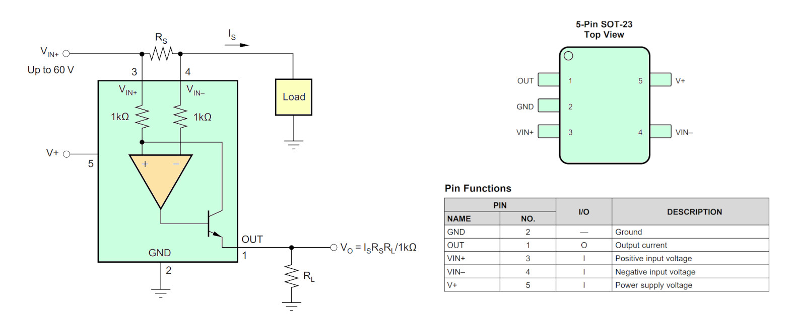
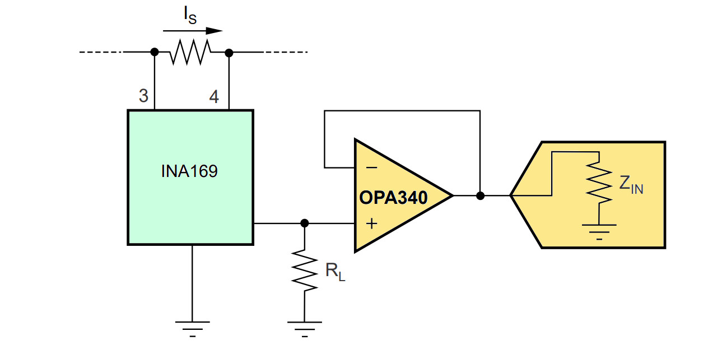
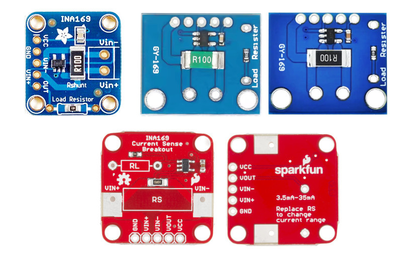

แนะนำการใช้งานไอซี INA169 Current Shunt Monitor#
▷ INA169#
ไอซี INA169 ของบริษัท Texas Instruments (TI) เป็นไอซีประเภท Current-Sense Amplifier (CSA) หรือเรียกว่า Current Shunt Monitor ใช้สำหรับการวัดกระแสที่ไหลในวงจร เช่น โหลดไฟฟ้า
การต่อใช้งานไอซี INA169 จะเป็นตามรูปแบบที่เรียกว่า High-Side Current Sensing ตามรูปตัวอย่างข้างล่าง กระแสจะไหลจ่ายแหล่งจ่ายไปผ่านตัวต้านทานตรวจจับกระแส R_S (เรียกว่า Shunt Resistor หรือ Current-Sense Resistor) ผ่านโหลดไฟฟ้าไปยังกราวด์ของวงจร

รูป: INA169 และตัวถังของไอซี
เนื่องจากเป็นการวัดกระแสแบบ High-Side ไอซี INA169 รองรับแรงดันที่ต่อเข้าที่ขา V_IN+ และ V_IN- (ได้สูงสุดถึง 60V) และสูงกว่าแรงดันไฟเลี้ยงสำหรับการทำงานของไอซี (เช่น +3.3V หรือ 5V เป็นต้น) แต่แรงดันผลต่างระหว่างขา V_IN+ กับ V_IN- จะต้องไม่เกิน 500mV
สัญญาณเอาต์พุตจาก INA169 ที่ขา OUT อยู่ในรูปของกระแสที่ขึ้นกับแรงดันตกคร่อมที่ R_S และจะถูกแปลงเป็นแรงดันโดยตัวต้านทานโหลด R_L ที่ต่อที่ขาเอาต์พุต
คุณสมบัติของไอซี INA169 (TI)
- Current Sensing Configuration:
- High-side: วัดกระแสฝั่งแรงดันไฟเลี้ยง
- Uni-directional: วัดกระแสไหลได้เพียงทิศทาง (กระแสไหลผ่านโหลดไปยังกราวด์ของวงจร)
- Current Output:
- ขา OUT ให้กระแสไฟฟ้าเป็นเอาต์พุต และนำไปต่อกับตัวต้านทานภายนอก เพื่อแปลงเป็นแรงดันไฟฟ้า
- ค่าของตัวต้านทาน (ใช้ค่าไม่เกิน 100kΩ) ใช้ในการกำหนดอัตราขยาย
- แรงดันเอาต์พุตเมื่อต่อกับตัวต้านทานภายนอก :
- คือ ตัวต้านทานตรวจจับกระแส (Current Shunt Resistor)
- คือ กระแสที่ไหลผ่านตัวต้านทาน หรือ กระแสของโหลดที่ต้องการวัด
- แรงดันเอาต์พุตที่จะต้องไม่เกิน และ
- Supply Voltage ():
- ช่วงแรงดันไฟเลี้ยง +2.7V ถึง +60V
- แรงดันไฟเลี้ยงต่อเข้าที่ขา V+ ของไอซี
- Input Common-Mode Voltage ():
- ช่วงแรงดันไฟเลี้ยงโหมดร่วม +2.7V ถึง +60V
- Supply Current / Quiescent Current ():
- กระแสไฟฟ้าที่ใช้ 60μA (typ), 125µA (max)
- Input Offset Voltage (:
- แรงดันอินพุต-ออฟเซต ±200μV (typ), ±1mV (max)
- Sense Voltage ():
- ช่วงผลต่างแรงดันอินพุตสูงสุด (): 100mV (typ), 500mV (max)
- Gain Accuracy:
- ความแม่นของอัตราขยาย ±0.5% (typ)
- Transconductance:
- อัตราขยาย (): 1mA/V (typ)
- กระแสเอาต์พุต
- Common-Mode Rejection Ratio ():
- อัตราส่วนการปฏิเสธโหมดร่วม 115 dB (typ)
- Bandwidth ():
- ค่า Gain จะลดลง เมื่อความถี่ของสัญญาณสูงขึ้น
- ความถี่ : 440kHz (typ) เมื่อใช้ = 10kΩ
- IC Package: 5-Pin SOT-23
การนำสัญญาณแรงดันเอาต์พุตจาก INA169 ไปต่อกับไอซี ADC เพื่อแปลงเป็นข้อมูลดิจิทัล มีคำแนะนำต่อไปนี้
- เนื่องจากเอาต์พุตของ INA169 ต่อกับตัวต้านทาน เช่น 10kΩ และเมื่อนำไปต่อกับขาอินพุตของ ADC ที่มีค่าอิมพีแดนซ์ของอินพุตไม่สูงมาก เช่น น้อยกว่า 100kΩ ซึ่งเป็นการต่อขนานกับ จึงส่งผลต่ออัตราขยายที่ได้
- ดังนั้นควรใช้ไอซีออปแอมป์เป็นวงจร Voltage Follower (หรือ Voltage Buffer) เพื่อแยกโหลด ก่อนนำสัญญาณไปต่อกับอินพุตของ ADC (Analog-to-Digital Converter) เพื่อแปลงเป็นข้อมูลดิจิทัล

รูป: ตัวอย่างการต่อใช้งาน INA169 กับวงจร Voltage Buffer และ ADC (Image Source: TI)
▷ ตัวอย่างโมดูล INA169#
เนื่องจากไอซี INA169 มีขนาดเล็ก และเพื่อความสะดวกในการต่อวงจรใช้งาน จึงได้เลือกใช้โมดูลประเภท Breakout Board เช่น

รูป: ตัวอย่างโมดูล INA169
โมดูล GY-169 เป็นแผงวงจรราคาถูกจากประเทศจีน ที่มีไอซี INA169
และมีวงจรในลักษณะเดียวกับโมดูล Adafruit INA169 Breakout
โมดูลนี้ มีตัวต้านทาน = R100 (0.1Ω, +/-1%, 2W)
และใช้ตัวต้านทาน = 103 (10kΩ)
▷ การเลือกใช้ค่าตัวต้านทาน R_S และ R_L#
การเลือกใช้ค่าตัวต้านทาน และ ส่งผลต่อการขยายสัญญาณ และแรงดันเอาต์พุตที่ได้ ตามสมการต่อไปนี้
ถ้ากำหนดให้ มีแรงดันสูงสุด ไม่ให้เกิน 250mV ลองมาดูตัวอย่างค่าพารามิเตอร์ทางไฟฟ้า ในการใช้งานไอซี INA169
| 1.0Ω | 10kΩ | 10 | 0.25A | 2.5V |
| 0.1Ω | 10kΩ | 1 | 2.5A | 2.5V |
| 0.1Ω | 20kΩ | 2 | 2.5A | 5.0V |
ในกรณีที่ใช้โมดูล GY-169 ซึ่งใช้ และ ดังนั้นกระแสโหลดไม่ควรเกิน 2.5A แรงดันเอาต์พุตสูงสุด 2.5V
กำลังไฟฟ้าสูญเสียที่เกิดขึ้นกับ คำนวณได้ตามสูตรต่อไปนี้
▷ กล่าวสรุป#
บทความนี้นำเสนอแนวทางการใช้งานไอซี INA169 ซึ่งสามารถนำไปใช้วัดกระแสไฟฟ้าที่ไหลผ่านโหลดในทิศทางเดียว และปริมาณกระแสที่ไหลจะถูกแปลงเป็นแรงดันไฟฟ้า ดังนั้นจึงมีเอาต์พุตเป็นสัญญาณแอนะล็อก สามารถนำไปใช้กับออสซิลโลสโคป เพื่อวัดสัญญาณ หรือนำไปต่อกับวงจร ADC ของไมโครคอนโทรลเลอร์ เพื่อแปลงเป็นข้อมูลดิจิทัล
บทความที่เกี่ยวข้อง
- "การเลือกใช้ไอซีประเภท Current-Sense Amplifier (CSA) สำหรับการวัดกระแสในวงจรไฟฟ้า-อิเล็กทรอนิกส์"
- "แนะนำการใช้งานโมดูล MAX4080 Current Sensor"
This work is licensed under a Creative Commons Attribution-ShareAlike 4.0 International License.
Created: 2025-05-12 | Last Updated: 2025-05-12